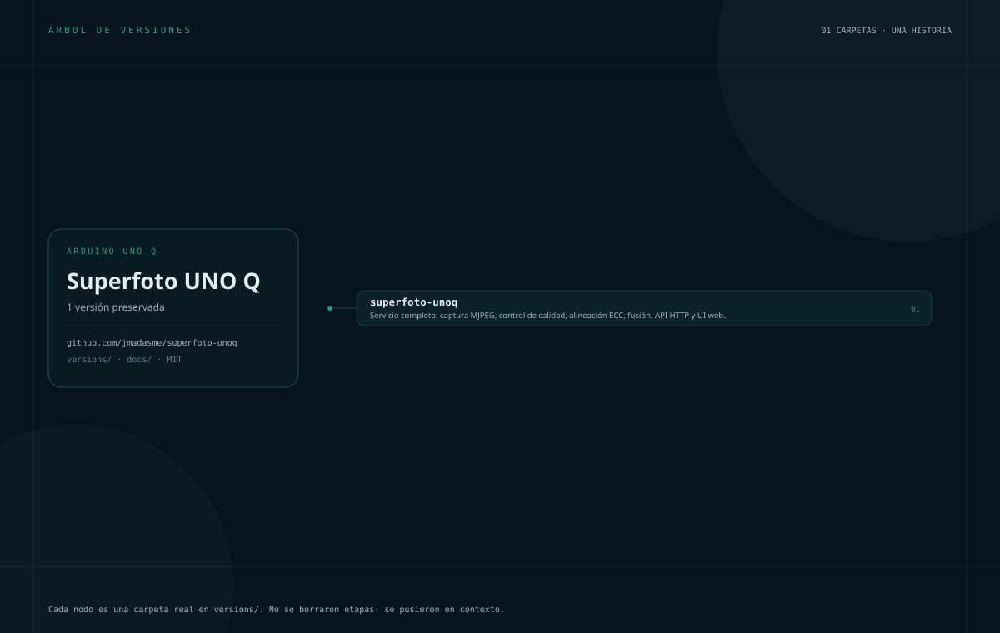
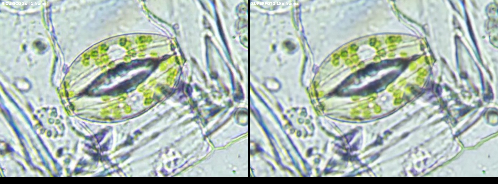
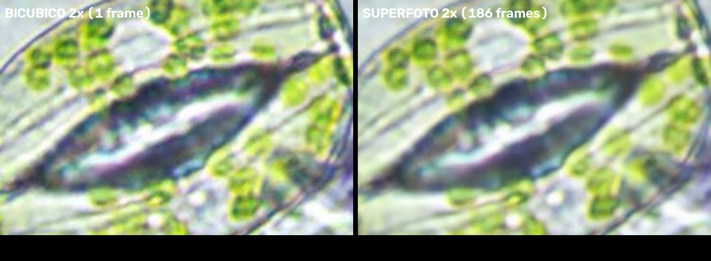

superfoto-unoq
56 archivosServicio completo: captura MJPEG, control de calidad, alineación ECC, fusión, API HTTP y UI web.
Ver carpetaSuperresolución multi-frame sobre la UNO Q: captura MJPEG, elige los frames más nítidos y los fusiona en una imagen de hasta 1620×2880.

Superfoto UNO Q es un servicio de superresolución multi-frame que corre íntegramente en una Arduino UNO Q. Captura decenas de frames MJPEG de una cámara IP Webcam, descarta los movidos o mal expuestos, los alinea con precisión subpíxel mediante ECC y los fusiona combinando drizzle, proyección iterativa de retroproyección (IBP) y Richardson-Lucy. Expone una interfaz web, una API HTTP y una CLI, y guarda cada sesión con imagen final, comparativa, referencia y cobertura de frames.
Está pensado para quien tiene una cámara barata y quiere mostrar fotografía computacional sin enviar imágenes a la nube, y para quien evalúa técnicas de fusión en hardware restringido: la documentación publica la ganancia medida frente a la interpolación bicúbica, no solo el resultado. Su interés está en el método verificable y en las comparativas por sesión. No sustituye una óptica mejor y no incorpora autenticación ni TLS; está declarado como servicio de una sola sesión en red local.
Cada carpeta conserva una etapa del proyecto. No se borraron las anteriores: se pusieron en contexto.
Servicio completo: captura MJPEG, control de calidad, alineación ECC, fusión, API HTTP y UI web.
Ver carpetaQué resuelve y por qué está construido así.
Una cámara de celular o de microscopio está limitada por el sensor y la difracción: al ampliar el zoom solo ves el mismo píxel agrandado, con ruido y sin detalle nuevo. El detalle fino se pierde entre píxeles y no se recupera de un único frame.
Capturar miles de frames con micro-desplazamiento subpíxel y fusionarlos: descartar los borrosos (lucky imaging), alinear cada frame a fracciones de píxel y acumular la señal real para recuperar hasta ~2× de resolución lineal (4× en píxeles).
El recorrido desde el código hasta el resultado.
Recibe frames de IP Webcam (MJPEG), archivo de video, webcam USB o carpeta de imágenes. En la UNO Q, el descubrimiento por sysfs descarta los decoders Venus (/dev/video0/video1) que no son cámaras.
Varianza del Laplaciano sobre el ROI central (50%): un umbral adaptativo por percentil descarta los frames borrosos y se queda solo con los nítidos.
phaseCorrelate para el desplazamiento grueso + refinamiento ECC hasta un error medio de ~0.04 px. Sin alinear, la fusión emborrona en lugar de mejorar.
Acumulación en una rejilla fina con kernel Lanczos4 y pesos por nitidez + exposición. Trabaja en uint16 para no saturar la suma de señal.
Iterative back-projection: proyecta el resultado a la resolución original, compara con cada frame y corrige el error de forma iterativa.
Desconvoluciona con una PSF gaussiana (σ=0.6, 15 iteraciones) solo sobre la luminancia en espacio Lab, para no alterar el color.
Una vista de los componentes principales y cómo se conectan.

IP Webcam (MJPEG), video, webcam USB o carpeta. En la UNO Q, sysfs descarta los decoders Venus que no son cámaras.
stdlib http.server + threading en el puerto 8010. API REST de sesiones y un único worker activo a la vez.
Gate de calidad → alineación subpíxel → fusión drizzle → IBP → deconvolución Richardson-Lucy.
Decisiones que hacen que el proyecto sea útil, mantenible y honesto.
Hasta ~2× lineal (4× en píxeles). No recupera difracción ni inventa detalle: el zoom 8× es digital y está documentado.
El umbral de nitidez sale de un percentil, no de una constante: se adapta a cada sesión sin tocar parámetros.
La acumulación drizzle suma señal en uint16 y lleva un mapa de coverage por píxel para saber dónde hubo datos reales.
Solo stdlib http.server + threading + OpenCV + NumPy. Se instala con apt en la UNO Q: nada de pip, Flask ni FastAPI.
tar + ssh (puerto 2222), preserva data/sessions entre deploys y arranca por cron @reboot. El puerto 8000 queda reservado.
pytest cubre MJPEG, reconexión, gate, alineación, fusión uint16, memoria, storage atómico, API, CLI, sketch y UI sin innerHTML.
Sin "magia": ganancias reales y límites claros, medidos sobre la placa.

+6,47 dB PSNR (benchmark sintético)
+5,31 dB en la UNO Q (400×300 → 800×600)
SSIM +0,028
487 frames vistos · 186 aceptados
1920×1080 → 3840×2160 (8,3 MP)
shift medio 0,66 px
Tecnologías y herramientas que sostienen el proyecto.
Arduino UNO Q STM32U585 Debian 13 Python 3 OpenCV NumPy http.server pytest Sin pip ni frameworks web: stdlib + OpenCV + NumPy, instalables con apt en la UNO Q.
bash — superfoto-unoq
# En la UNO Q (o local): dependencias con apt, sin pip $ sudo apt install python3-opencv python3-numpy # Procesa un video local $ python3 scripts/process_video.py --input video.mp4 --scale 2.0 # Despliega a la placa por ssh (puerto 2222, sin sudo) $ ./scripts/deploy_unoq.sh
Cada decisión, cada límite y cada comando están documentados en el repositorio. Sin folletos: lo que funciona se muestra, lo que no, también.
Qué es, cómo funciona, instalación y límites.
Requisitos, uso, parámetros y diagnóstico.
Arquitectura, módulos y extensión.
Documentación externa y buenas prácticas.
Start, stop, logs y arranque automático por cron.
Qué puede y qué no puede hacer el pipeline.
Las primeras versiones existen para que estos errores no se repitan: cada una dejó una decisión de diseño verificable.
La configuración inicial, basada solo en drizzle y promedio ponderado, daba 23,48 dB de PSNR, por debajo de los 24,34 dB de un único frame interpolado bicúbicamente. Se incorporó proyección iterativa de retroproyección con hasta 32 frames y Richardson-Lucy sobre luminancia; la misma escena subió a 30,81 dB y SSIM 0,9497.
En un video de 50 segundos con la cámara moviéndose se vieron 1250 frames y solo 7 pasaron el control de calidad, con desplazamiento medio de 10,2 px y cobertura insuficiente. En lugar de forzar la fusión se añadió un aviso de escena en movimiento cuando más del 50 % de las alineaciones falla, con un mínimo de 30 frames evaluados.
El acumulador de drizzle usaba uint8 y saturaba al sumar muchas exposiciones, lo que corrompía la media ponderada. Se migró a uint16 con tope de 65535 y se agregó una prueba de 400 frames que verifica que el contador no desborda. Es la incidencia I-001 de la bitácora.
Seis criterios con la misma escala en todo el catálogo, para comparar sin marketing.
Cualquier fuente MJPEG o webcam USB que OpenCV pueda abrir; el flujo probado es IP Webcam en Android.
Entre 10 y 30 suele ser el punto útil. Pasado ese número el costo de postproceso crece más que la mejora.
Mejora el detalle y baja el ruido, pero no reemplaza una óptica mejor. La ganancia se mide y se publica con cada sesión.
Todo en la UNO Q: captura, alineación, fusión y servicio web. No se envía nada a Internet.
Usá esta familia como base para superfoto uno q. Está documentada para que puedas entenderla, ejecutarla y continuarla sin adivinar.